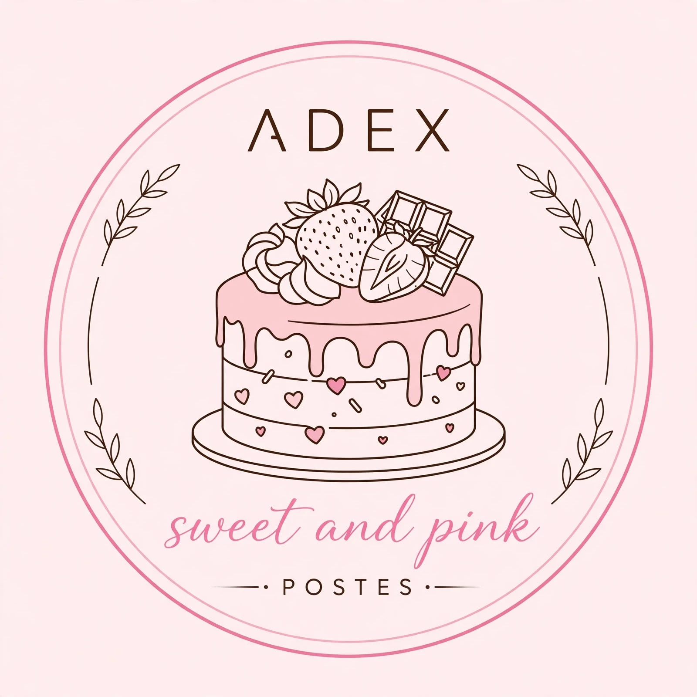

Quiénes somos
ADEX Sweets & Pink es una microempresa de pastelería artesanal en Cúcuta. Esta línea elabora ponqué de vainilla por pedido, para venta en punto propio, domicilios y tiendas del barrio, en una planta de unos 80 m² con cinco personas.

ADEX sweet and pinkSimulación de implementación de BPM · Resolución 2674 de 2013 · Control e Inocuidad Alimentaria
Plan básico de Buenas Prácticas de Manufactura para la línea de ponqué de vainilla de ADEX Sweets & Pink: la empresa, la planta, el proceso y cada programa que exige la Resolución 2674 de 2013.
Todo el plan se basa en la Resolución 2674 de 2013. Cada componente cita el artículo que lo exige.
Quiénes somos
ADEX Sweets & Pink es una microempresa de pastelería artesanal en Cúcuta. Esta línea elabora ponqué de vainilla por pedido, para venta en punto propio, domicilios y tiendas del barrio, en una planta de unos 80 m² con cinco personas.
Misión
Elaborar ponqués de vainilla artesanales, seguros y de calidad constante, aplicando Buenas Prácticas de Manufactura desde la compra de materias primas hasta la entrega al cliente.
Visión
Para 2030, ser la pastelería de referencia en Cúcuta por la inocuidad y el sabor de su ponqué, con concepto sanitario favorable sostenido y registro sanitario para distribuir en tiendas de la región.
Ficha técnica
Organigrama
Toca un cargoFlujo en un solo sentido, de la zona sucia a la limpia.
Once etapas. Los puntos de control (PC) llevan borde ámbar; la clave está en el horneo y el enfriamiento.
Proveedores aprobados, inspección de cada entrega y registro F01.
Reglas de almacenamiento
Art. 11 certificado médico anual y revisión diaria · Arts. 12 y 13 capacitación de mínimo 10 h al año · Art. 14 prácticas higiénicas.
Dotación del manipulador
0 de 7 revisadosToca cada punto de la figura.
Lavado de manos
Cuatro programas escritos con procedimientos, registros y responsables.
Hipoclorito en superficies con alimento, amonio cuaternario en pisos, rotados cada mes. Limpieza diaria al terminar la jornada y profunda semanal y mensual (F04, F05).
Calculadora de diluciones
mL = ppm × L × 1000 ÷ (% × 10 000)
Medir
38,1 mL
Código de colores de la Res. 2184 de 2019. Canecas con tapa de pedal, retiro diario por la salida de residuos (F08).
¿A qué caneca va? 1/8
Tanque con tapa lavado cada 6 meses y lectura semanal de cloro y pH (F09). Mueve los controles para simular una lectura.
Rangos de la Res. 2115 de 2007.
Laboratorio externo acreditado por el ONAC (NTC-ISO/IEC 17025) o autorizado por el INVIMA.
ADEX no tiene laboratorio propio: en la planta solo se toman las muestras con técnica aséptica y se envían refrigeradas con cadena de custodia. Los resultados se comparan con la normativa vigente y, si alguno no cumple, se retira el lote, se corrige la causa y se repite el muestreo (F13).
Rotulado según la Res. 5109 de 2005; almacenamiento y transporte según los Arts. 28 y 29.
Generador de etiqueta
Inspección del vehículo antes del despacho
El despacho solo se aprueba cuando se cumplen todos los puntos.
El plan completo, con criterios de recepción, capacitación, calendario de limpieza, cronograma y lista de verificación, está en el documento subido a la plataforma.
Gracias.
¿Preguntas?Cronograma de implementación, lista de verificación y preguntas frecuentes.
Cumplimiento
0%
Cronograma de implementación · 8 semanas